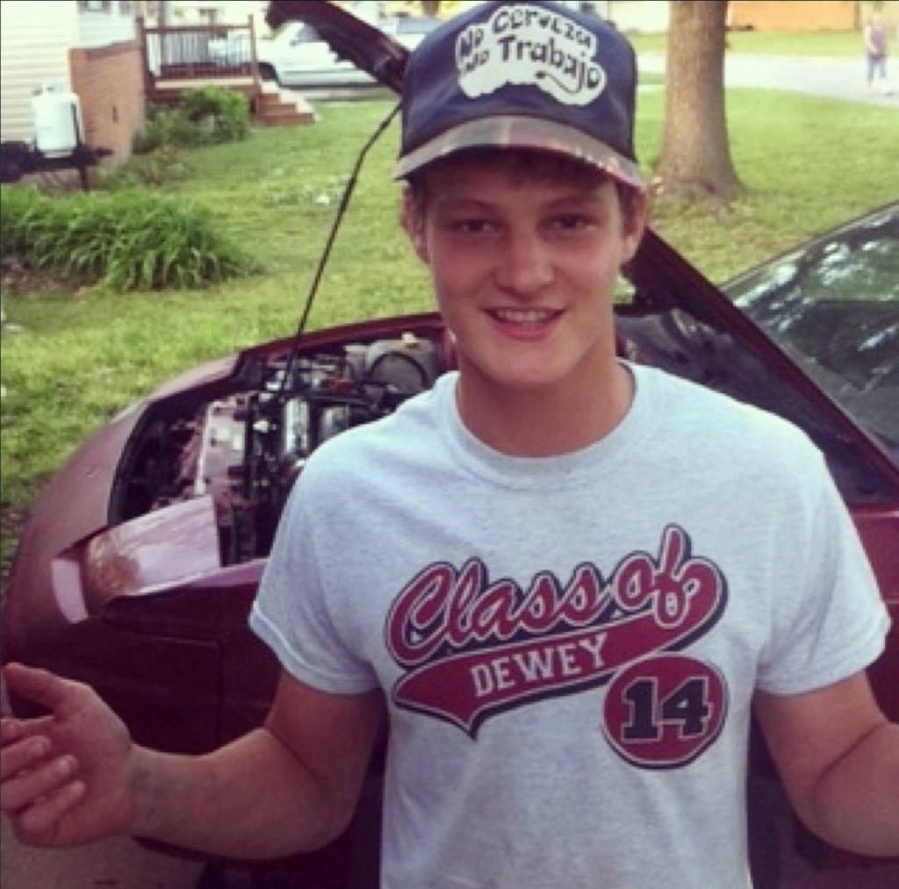

UNDER CONSTRUCTION
DYLAN RUBLE
VETERAN BUILDER DIGITAL CRAFTSMAN
You are visitor #001,337 · Your IP has been logged: 192.168.1.337

📷GOES HERE
photo.png
in the same folder
Welcome to my homepage! I'm Dylan Ruble — a U.S. Military Veteran, 10-year Construction Professional, and self-taught AI-accelerated digital builder based out of Bartlesville, Oklahoma.
I'm not your typical developer. Before I ever wrote a line of code, I spent years leading job sites, coordinating crews, and getting missions done in the field. That discipline now drives everything I build online.
Right now I'm building fast using Cursor — the AI-powered IDE — along with HTML, CSS, JavaScript, Python, Node.js, and Discord bots. I also build custom websites, design workflow organizers, and create email organizer tools that help people stay on top of their inbox and daily tasks. I ship real tools, not vaporware.
Off the job site and off the keyboard, I'm a lifelong gamer — RPGs, souls-likes, open-world adventures, and OG Xbox classics are my happy place. That same love of systems, exploration, and grinding carries into how I build software.
Most people will recognize Dylan from his work in the construction field and the U.S. Armed Forces. You'll find information about his skills, projects, and work history by following the links above. Feel free to email me with any opportunities. (Note: The guestbook is currently not working.)
Real shipped tools. No vaporware.
A high-speed construction estimation web tool built with Tailwind CSS and JavaScript. Generates professional blueprint-style PDFs instantly for field workers. Built by a real field worker, for real field workers. No spreadsheet. No delay.
An AI-powered web scraping tool built with Python and Streamlit. Point it at any URL — it extracts, structures, and delivers clean data instantly. No code required. Built for anyone who needs data without the headache.
This page — a Win95 desktop with matrix rain background, Netscape Navigator browser window, GeoCities-style layout, and 90s aesthetics. Built entirely with HTML, Tailwind CSS, and Cursor.
- Managed job sites from ground-up — materials, schedules, crews
- Led and supervised teams; maintained quality and safety on every site
- Read blueprints and specs; executed work with precision
- Solved real problems in real-time under tight deadlines and budget
- Field reputation: if it needs to get done, it gets done
- Served honorably in the United States Armed Forces
- Mission-first mentality: objectives completed, no excuses
- Leadership, teamwork, and high-pressure execution training
- Foundation of discipline that carries into every role since
Most developers learned to code before they ever learned to work under pressure. I did it the other way around. Ten years in the field means deadlines are not suggestions — they are reality.
Military service means when a mission is assigned, it gets completed. That same standard applies to every digital project: ship it, ship it right, ship it on time.
Real-world execution experience + AI-powered development = a rare and genuinely powerful combination. I'm ready to build something real for you.